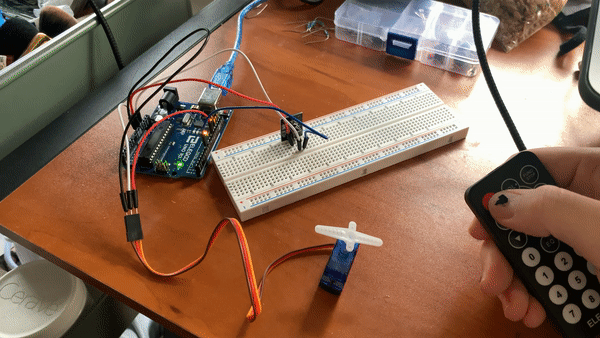
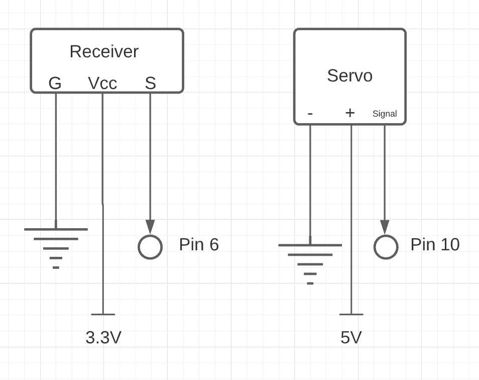

My Assignment 4!

Here is all the documentation for assignment 4. For this assignment I used and IR receiver, remote, and Servo motor to do an action on the servo motor when the power button of the remote was pressed. I took the remote input, checked if the IR code was for the power button, then rotated the servo motor.
Schematic
These are the schematics for my IR receiver and Servo motor.

`Circuit
Here is my breadboard and arduino connected to my IR receiver and Servo motor. Note that I connected my IR receiver to 3.3V, as I found it was more responsive and still had sufficient power.

Firmware
This is my code that tracks the input of the remote and rotates the Servo motor.
//https://create.arduino.cc/projecthub/electropeak/use-an-ir-remote-transmitter-and-receiver-with-arduino-1e6bc8
//https://www.circuitbasics.com/arduino-ir-remote-receiver-tutorial/
//https://www.circuitbasics.com/controlling-servo-motors-with-arduino/#:~:text=To%20move%20the%20servo%2C%20use,determines%20the%20amount%20of%20rotation.
// ^referenced articles to set up IR remote and servo
#include //include servo library
#include //include IR remote library
int recPin = 6; //receiver connected to pin 6
IRrecv irrecv(recPin); // creates receiver object
decode_results results; //initialize receiving IR code
Servo serv; //servo object
void setup(){
Serial.begin(9600);
irrecv.enableIRIn(); // Starts the receiver
serv.attach(10); //attaches servo to pin 10
}
void loop(){
if (irrecv.decode(&results)){ //if IR code is received
if(results.value == 0xFFA25D){ //if IR code is the power button
serv.write(0); //servo to 0
delay(500); //short delay
serv.write(90); //servo to 90
delay(500); //short delay
serv.write(180); //servo to 180
delay(500); //short delay
}
irrecv.resume(); //resets receiver
}
}